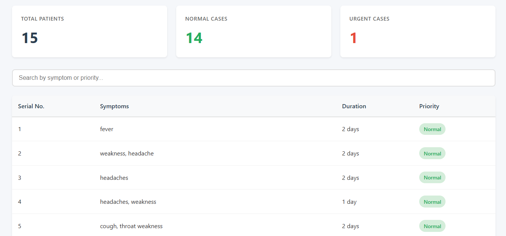
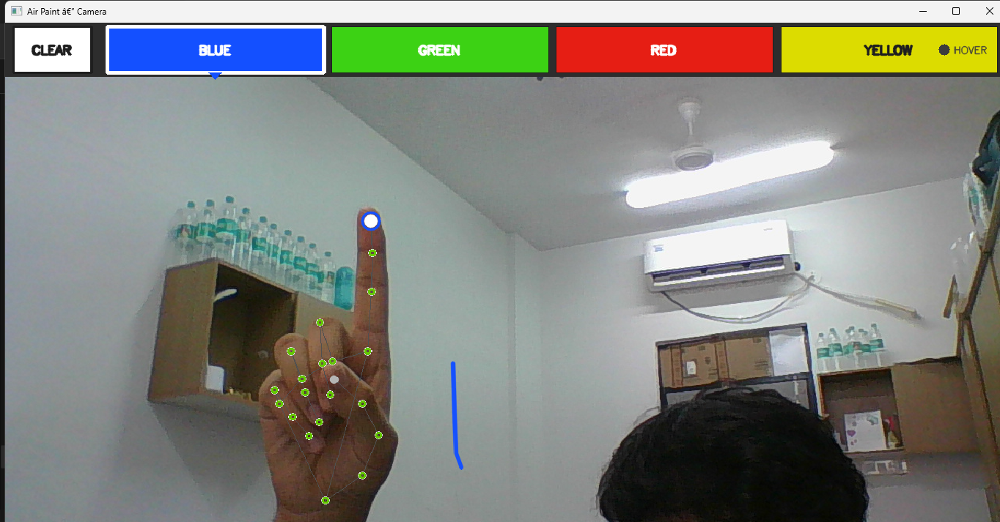
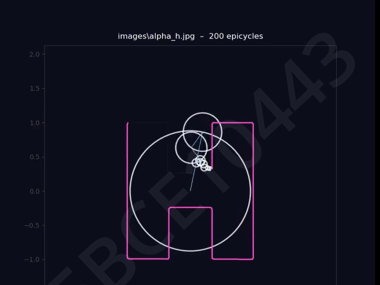
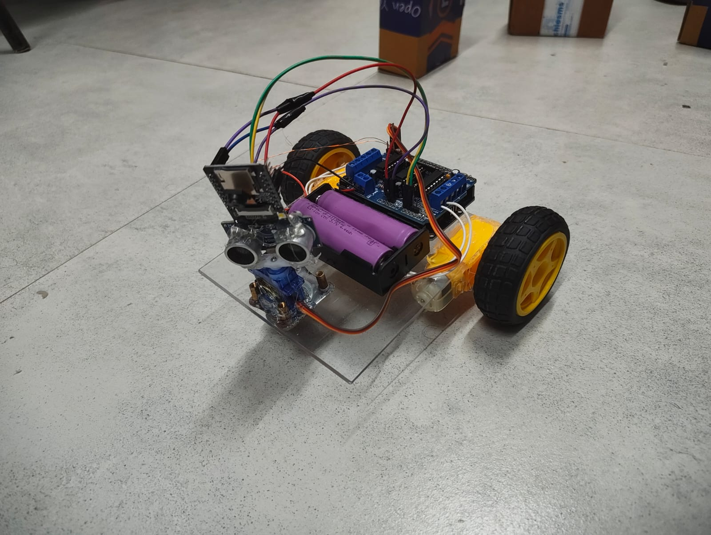
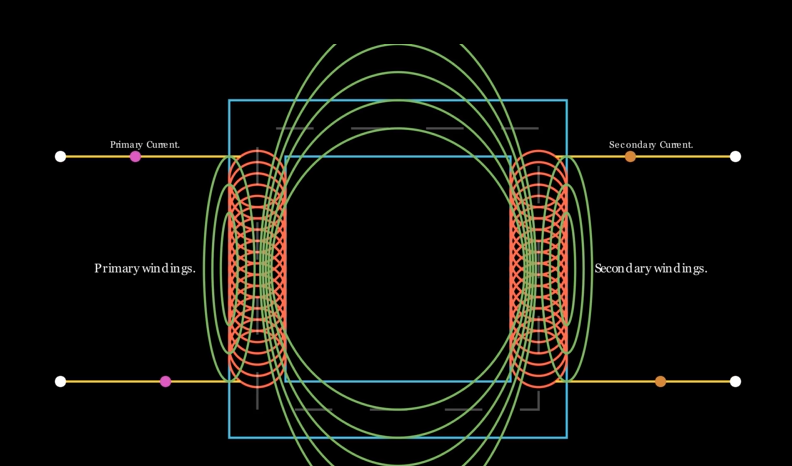

Projects

AI-powered Teleconsultation Triage System
An intelligent triage platform that uses AI to assess patient symptoms prior to a teleconsultation session. Classifies urgency levels, suggests preliminary guidance, and routes patients to the appropriate care pathway — reducing wait times and physician load.
View on GitHub
GestureCanvas
A real-time hand-gesture-driven drawing application powered by computer vision. Uses MediaPipe for landmark detection to translate finger movements into brush strokes — enabling touchless, immersive digital painting directly in the browser or desktop environment.
View on GitHub
Fourier Image Decomposition Simulator
An interactive visualisation tool that demonstrates how images are constructed and deconstructed using 2D Fourier transforms. Allows users to manipulate frequency components in real time, offering an intuitive grasp of signal processing and spectral analysis.
View on GitHub
MxAiCombat
A competitive AI battle arena where multiple trained agents face off in a turn-based combat environment. Built to explore reinforcement learning strategies, emergent behaviours, and agent vs. agent dynamics in a constrained game-theoretic setting.
View on GitHubPumpkin Discord Bot
A feature-rich Discord bot named Pumpkin, built with Python and discord.py. Supports moderation commands, custom responses, utility functions, and server automation — designed to be modular and easily extensible for community servers.
View on GitHub
Transformer Animation Using Manim
A set of programmatic animations built with the Manim Python library that visually explain the inner workings of the Transformer architecture — attention mechanisms, positional encoding, and feed-forward layers — rendered as clean, publication-quality video explainers.
View on GitHub